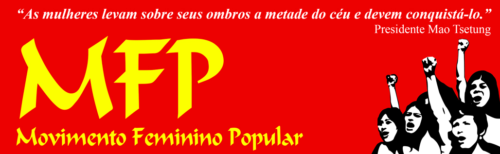

Rebelar-se é justo!
Jornal A Nova Democracia
Por uma imprensa democrática, popular, nacional e antiimperialista!
Biblioteca
Manifesto do Partido Comunista
Karl Marx e Friedrich Engels
Do Socialismo Utópico ao Socialismo Científico
Friedrich Engels
Salário, Preço e Lucro
Karl Marx
Uma Contribuição para a Crítica da Economia Política
Karl Marx
Princípios Básicos do Comunismo
Friedrich Engels
A Origem da Família, da Propriedade Privada e do Estado
Friedrich Engels
Anti-Dühring
Friedrich Engels
Ludwig Feuerbach e o Fim da Filosofia Clássica Alemã
Friedrich Engels
O Estado e a Revolução
Vladimir Lenin
Que Fazer
Vladimir Lenin
Imperialismo Fase Superior do Capitalismo
Vladimir Lenin
As Três Fontes e as Três partes Constitutivas do Marxismo
Vladimir Lenin
Marxismo e Revisionismo
Vladimir Lenin
Sobre o Materialismo Dialético e o Materialismo Histórico
Josef Stalin
Contra o Liberalismo
Mao Zedong
Sobre a Prática
Mao Zedong
Sobre a Contradição
Mao Zedong
Sobre a Ditadura da Democracia Popular
Mao Zedong
Sobre o tratamento correto das contradições no seio do povo
Mao Zedong
Citações do Presidente Mao Zedong
Mao Zedong
A Carta Chinesa
Partido Comunista da China
Uma Compreensão Básica do Partido Comunista da China
Partido Comunista da China
Acerca do Pensamento Gonzalo
Partido Comunista do Peru
Linha de Massas
Partido Comunista do Peru
Nosso Caminho
Liga dos Camponeses Pobres
Eleição Não! Revolução Sim!
Frente Revolucionária de Defesa dos Direitos do Povo
A dupla negação da TMD: nem leninismo, nem marxismo
Núcleo de estudos do marxismo-leninismo-maoismo
O Legado Imortal do Presidente Gonzalo
Núcleo de estudos do marxismo-leninismo-maoismo
Friedrich Engels: a fundação do Comunismo, a sistematização do Marxismo e a Revolução Democrática
Núcleo de estudos do marxismo-leninismo-maoismo
História do Partido Comunista (Bolchevique) da URSS
Comissão do Comitê Central do PC(b) da URSS
De Karl Marx ao marxismo - Luta de classes, luta de duas linhas e linha de massas
Núcleo de estudos do marxismo-leninismo-maoismo
História da democracia e luta de classe: Democracia Popular e Nova Democracia
Prof. Fausto Arruda
A Revolução de Nova Democracia é a força principal da Revolução Proletária Mundial
Partido Comunista do Brasil – P.C.B.
Lenin e o Partido Comunista Militarizado
Partido Comunista do Brasil – P.C.B.
A questão filosófica em Lenin
Comitê de Redação da revista ‘O Maoista’
Um se divide em dois: a arma revolucionária de Mao Tsetung
Antonio de Irala
Sobre o Pensamento de Lenin
Comitê Bandeira Vermelha da Alemanha
Lenin militante ilegal
B. Vasiliev e M. Kedrov
Grupo de Estudos Vale dos Pomares
Discord
Blog
Instagram
Guia de estudos do marxismo-leninismo-maoismo aportes de validez universal do Presidente Gonzalo
Servir ao Povo
Publicações marxistas-leninistas-maoistas em português do Brasil

Movimento Feminino Popular
Organização de vanguarda e de massas de mulheres do povo
Rompendo com Velhas Ideias
João Pedro Fragoso
YouTube
Instagram
Atualizado em 15/09/2024
 Por uma imprensa democrática, popular, nacional e antiimperialista!
Por uma imprensa democrática, popular, nacional e antiimperialista!